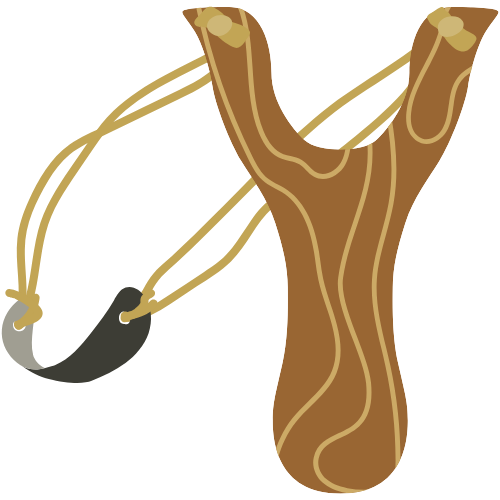
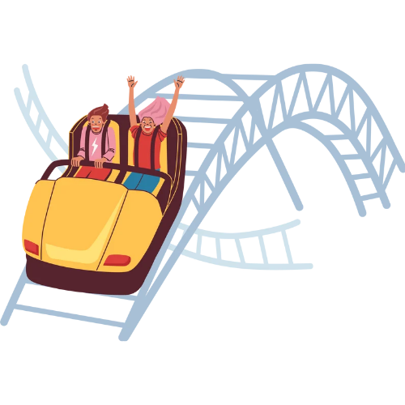
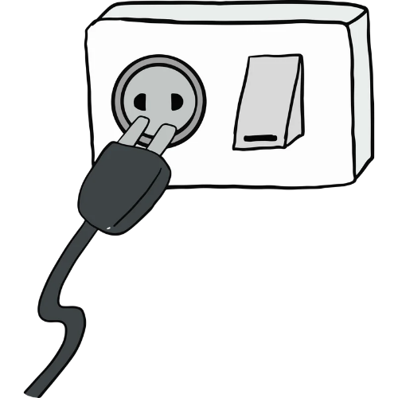
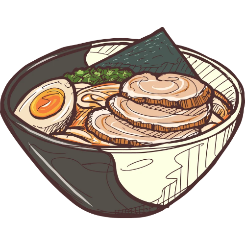
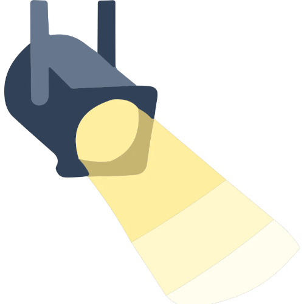
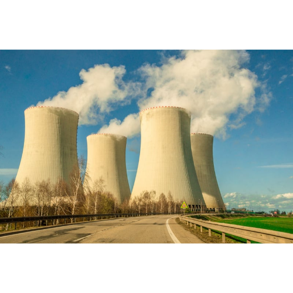

ENERGI KINETIK
Energi sing diduweni dening obyek sing obah
luwih cepet obyek obah, energi kinetik luwih gedhe.
ENERGI POTENSIAL GRAVITASI
Energi sing diduweni obyek amarga ing dhuwur tartamtu saka lumahing bumi
Semakin tinggi posisi kedudukan benda tersebut dari permukaan tanah, maka semakin besar pula energi potensialnya.

ENERGI POTENSIAL PEGAS
Energi sing dibutuhake kanggo ngompres utawa ngegungake pegas utawa bahan elastis kanthi jarak Δx.
ENERGI MEKANIK

Energi mekanik yaiku jumlah energi potensial lan energi kinetik ing obyek utawa sistem.
ENERGI LISTRIK

Energi sing muncul amarga arus listrik sing mili liwat konduktor. Arus listrik sing mili yaiku aliran muatan listrik ing konduktor.
ENERGI KIMIA

Energi kimia yaiku energi sing ana ing ikatan atom sing mbentuk materi.
ENERGI PANAS (KALOR)
Energi sing dumadi amarga owah-owahan suhu obyek
Conto: panganan, bahan bakar (lenga, gas, batu bara), baterei.
ENERGI BUNYI
Energi sing diprodhuksi dening obyek sing kedher (sumber swara).
ENERGI CAHAYA

Energi sing dipancarake dening sumber cahya
ENERGI NUKLIR

Energi iki cukup mbebayani amarga radioaktivitas uranium lan plutonium.
Energi nuklir bisa ngasilake tenaga sing akeh banget liwat reaksi fisi (pemisahan) lan fusi (gabungan), nanging mbutuhake tenaga ahli lan peralatan sing cukup kanggo nyetabilake reaksi kasebut.
Yen ditangani kanthi ora bener, uranium utawa plutonium bisa njeblug kanthi catastrophic.
| NO |
NAMA ENERGI |
KARAKTERISTIK |
KELEBIHAN |
RUMUS (JIKA ADA) |
| 1 |
Kinetik |
- Mung ana ing benda obah: Benda sing meneng ora duwe energi kinetik.
- Dipengaruhi massa: Yen massane benda sansaya gedhe, energi kinetike uga sansaya gedhe.
- Dipengaruhi kecepatan: Sansaya cepet benda kasebut obah, sansaya gedhe energi kinetike.
- Arah gerak beda-beda: Arahe obah bisa miring, muter (rotasi), utawa kedher (vibrasi).
|
Sumber Energi Angin lan Banyu: Digunakake kanggo muter kincir angin (PLTB) utawa turbin banyu (PLTA) kanggo ngasilake listrik sing ramah lingkungan.
Dhasar Transportasi: Nggawe kendaraan kaya motor, mobil, lan sepur bisa mlaku lan mindhake barang utawa manungsa saka siji panggonan menyang panggonan liyane.
Sistem Pengereman (Rem): Pangerten babagan energi kinetik mbantu para insinyur ngrancang rem kendaraan sing aman kanggo ngowahi energi gerak dadi energi panas supaya kendaraan bisa mandheg.
|
Ek = ½ mv² |
| 2 |
Potensial Gravitasi |
Kalebu Besaran Skalar: Mung nduweni nilai utawa ukuran, nanging ora nduweni arah.
Gaya Konservatif: Usaha sing dilakoni dening gravitasi mung didelok saka posisi awal lan pungkasan, dudu saka dalan sing dilewati.
Nilai Negatif ing Jarak Tanpa Wates: Kanggo petungan astronomi (skala kosmik), nilaine negatif lan dadi nol ing jarak sing ora ana watese. Yen barang saya cedhak karo pusat massa, nilaine saya negatif. Iki nuduhake yen barang kasebut kaiket dening gravitasi.
|
Bisa Disimpen Suwe: Energi iki ora bakal ilang sajrone barang kasebut ora owah panggone saka dhuwur.
Sumber Energi Resik: Ora ngasilake polusi utawa limbah sing ngrusak lingkungan nalika digunakake.
Gampang Diowah: Bisa diowah dadi energi liyane kanthi gampang, tuladhane dadi energi kinetik (gerak) lan energi listrik.
|
Ep = m × g × h |
| 3 |
Potensial Pegas |
Sifat Elastisitas: Mung ana ing barang sing bisa mulur utawa mbalek menyang wujud asline.
Hukum Hooke: Gede cilik energi iki gumantung karo gaya pamulih sing pengin mbalekake pegas menyang posisi normal.
Besaran Skalar: Padha kaya energi liyane, energi iki mung nduweni nilai lan ora nduweni arah.
|
Bisa Ngempet Gaya: Bisa digunakake kanggo nahan utawa nahan guncangan kanthi cepet.
Aplikasi Maneka Warna: Kanggo sistem suspensi motor/mobil (shockbreaker), kasur spring bed, lan jam tangan mekanik.
Akurasi Dhuwur: Kanggo alat ukur kaya timbangan pegas (neraca pegas) amarga sifate sing stabil.
|
EP = ½k × X² |
| 4 |
Mekanik |
Hukum Kekekalan Energi: Nilai total energi mekanik bakal tansah padha utawa tetep, yen ora ana gaya njaba (kaya gaya gesek) sing ngganggu.
Gabungan Rong Energi: Hasil penjumlahan saka energi potensial (energi panggone) lan energi kinetik (energi gerake).
Sifat Dinamis: Nalika energi potensial suda amarga barang kasebut mudhun, energi kinetike bakal tambah amarga soko banter gerake.
|
Dhasar Utama Mekanika: Dadi prinsip kerja dasar kanggo kabeh mesin, mesin kendaraan, nganti mesin pabrik.
Prediksi Gerak: Mbantu para ilmuwan lan insinyur kanggo ngitung kacepetan utawa dhuwure barang tanpa kudu ngukur langsung.
Sistem Roller Coaster: Digunakake kanggo ngrancang dolanan roller coaster supaya bisa mlaku banter lan slamet nggunakake owah-owahan energi.
|
EM = EP + EK |
| 5 |
Listrik |
Mili saka Tegangan Dhuwur: Arus listrik tansah mili saka potensial (tegangan) dhuwur menyang potensial sing luwih cendhak.
Gampang Diowah Wujude: Bisa diowah dadi energi panas (setrika), energi gerak (kipas angin), energi cahya (lampu), lan energi swara (speaker).
Butuh Media Konduktor: Kanggo mili kanthi lancar, energi iki mbutuhake bahan konduktor kaya tembaga utawa aluminium.
|
Praktis lan Efisien: Bisa disalurake nganggo kabel kanthi jarak sing adoh banget saka pusat pembangkit listrik menyang omah-omah.
Ramah Lingkungan ing Panggonan Panggo: Nalika digunakake ing omah utawa pabrik, energi listrik ora ngasilake keluk (asap) utawa polusi udara.
Gampang Dikontrol: Bisa diuripake, dipateni, utawa diatur gedhe cilike kanthi gampang nggunakake saklar utawa sistem otomatis.
|
V = W : Q |
| 6 |
Kimia |
Energi sing Disimpen (Laten): Energi iki ora katon langsung lan lagi bisa digunakake sawise ikatan kimiane pedhot utawa owah.
Reaksi Eksoterm lan Endoterm: Bisa ngasilake panas nalika energine metu (eksoterm, kaya geni) utawa mbutuhake panas nalika proses kasebut kedadeyan (endoterm).
Owah-owahan Zat: Sawise energine digunakake, zat asline bakal owah dadi zat anyar sing seje sifate.
|
Kapadhetan Energi sing Dhuwur: Bisa nyimpen energi sing gede banget ing njero wujud utawa ukuran zat sing cilik (tuladhane bensin utawa baterei).
Gampang Disimpen lan Digawa: Zat kimia kaya baterei, gas LPG, utawa panganan bisa disimpen suwe lan digawa menyang endi-endi tanpa kelangan energine.
Sumber Utama Panguripan: Dadi energi dasar kanggo makhluk urip liwat panganan sing diproses dadi energi kanggo awak (metabolisme).
|
Q = m × c × perubahan suhu (T akhir - T awal) |
| 7 |
Panas (Kalor) |
Mili saka Panggonan Panas: Energi panas tansah mili dhewe saka barang sing suhune dhuwur menyang barang sing suhune luwih cendhak nganti suhune padha (setimbang).
Bisa Mindhah nganggo Telung Cara: Panas bisa mindhah liwat cara konduksi (liwat perantara kaya wesi), konveksi (mili bebarengan zate kaya banyu umob), lan radiasi (tanpa perantara kaya panase srengenge).
Bisa Ngowahi Wujud lan Ukuran: Panas bisa nggawe barang memuai (tambah amba/dowo) lan ngowahi wujud zat (tuladhane es dadi banyu).
|
Sumber Panguripan Utama: Panas saka srengenge njaga suhu bumi supaya tetep anget lan dadi syarat utama kanggo makhluk urip bisa urip.
Penting Kanggo Industri lan Rumah Tangga: Digunakake kanggo masak, ngolah logam ing pabrik, sterilisasi alat medis, nganti ngeringake sandhangan.
Pembangkit Listrik (PLTU): Bisa digunakake kanggo nggodhog banyu dadi uap tekanan dhuwur sing bisa muter turbin kanggo ngasilake listrik.
|
Q = m × c × perubahan suhu (T akhir - T awal) |
| 8 |
Bunyi |
Mbutuhake Medium: Bunyi mung bisa mrambat yen ana zat perantara (zat padat, cair, utawa gas/udara). Bunyi ora bisa krungu ing njero ruang hampa udara (kaya ing luar angkasa).
Kalebu Gelombang Longitudinal: Gelombang bunyi mrambat kanthi wujud rapetan lan renggangan sing arah kedhere padha karo arah mrambate.
Bisa Mantul (Refleksi): Yen nabrak barang sing atos, bunyi bisa mantul dadi gema (swara pantul sing krungu sawise swara asli) utawa gaung (swara pantul sing bebarengan karo swara asli).
|
Alat Komunikasi Utama: Kanggo micara, ngrungokake musik, lan menehi pratandha bebaya (kaya swara sirine utawa kentongan).
Teknologi Ultrasonik (Medis): Digunakake kanggo USG (Ultrasonografi) kanggo ndelok bayi ing njero weteng utawa mriksa organ njero tanpa kudu dibedhah.
Alat Navigasi lan Ukur (Sonar): Digunakake dening kapal laut utawa kapal selam kanggo ngukur jerone segara lan nemokake barang ing njero banyu.
|
I = P : A |
| 9 |
Cahaya |
Bisa Mrambat Tanpa Medium: Cahya ora mbutuhake zat perantara kanggo mrambat, saengga panase lan cahyane srengenge bisa tekan bumi senajan liwat ruang hampa udara.
Mlaku Lurus: Cahya tansah mrambat dadi garis lurus sajrone ora nabrak barang utawa pindhah medium sing beda ketebalane.
Dualitas Gelombang-Partikel: Cahya nduweni sifat kembar, yaiku bisa tumindak minangka gelombang lan uga minangka partikel cilik sing diarani foton.
|
Sumber Fotosintesis: Dadi energi paling penting kanggo tanduran kanggo nggawe panganan lan ngasilake oksigen kanggo makhluk urip liyane.
Pepadhang Utama: Nulungi manungsa lan kewan supaya bisa ndelok kahanan saubenge lan nindakake pakaryan saben dina.
Teknologi Panel Surya (PLTS): Bisa langsung diowah dadi energi listrik sing resik lan ora nggawe polusi nggunakake sel surya
|
E = h × f |
| 10 |
Nuklir |
Kedadeyan Saka Rong Reaksi: Energi iki bisa diasilake liwat rong cara, yaiku Fisi (pembelahan inti atom sing abot kaya Uranium) lan Fusi (penggabungan inti atom sing entheng kaya Hidrogen, kaya sing kedadeyan ing srengenge).
Kapadhetan Energi Sing Dhuwur Banget: Jumlah bahan sing sithik banget bisa ngasilake energi sing tikel-tikel jroning gedhene tinimbang bahan bakar fosil.
Ngasilake Radiasi: Proses nuklir tansah ngasilake partikel radiasi, saengga mbutuhake panggonan pengaman sing kandel (reaktor) supaya ora mbebayani lingkungan.
|
Ora Ngasilake Keluk (Bebas Emisi Karbon): Nalika beroperasi, Pembangkit Listrik Tenaga Nuklir (PLTN) ora ngetokake gas omah kaca utawa polusi udara, dadi resik kanggo langit.
Efisien lan Hemat Bahan Bakar: Siji pil cilik Uranium (kira-kira sakbunderan driji) bisa ngasilake energi sing padha karo siji ton batubara utawa ratusan liter bensin.
Tansah Siyap 24 Jam: Ora kaya panel surya utawa kincir angin sing gumantung cuaca, PLTN bisa terus ngasilake listrik rina lan wengi tanpa mandheg.
|
E = DeltaMC² |